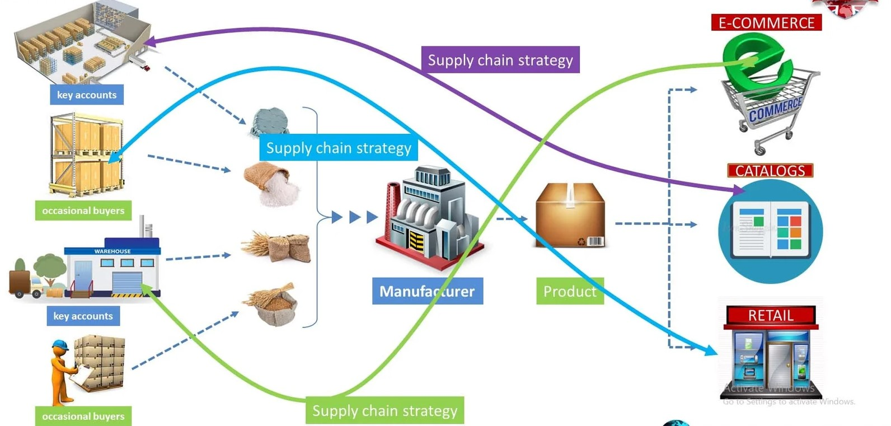

🌱 Vision
Transparent, Efficient, and Sustainable Supply Chains Meeting Daily Local and Export Demand
Our vision for SmartHarvest is rooted in the transformation of agriculture into an ecosystem defined by trust, intelligence, and sustainability. We envision a world where every harvest is traceable, every decision is data-driven, and every stakeholder — from farmers to consumers — benefits from technological transparency.
1. A Future of Transparency and Trust
Our vision is to build an agriculture ecosystem powered by transparency and accountability. Every product — from the moment it’s harvested to when it reaches consumers — is digitally traceable.
- AI-driven data integrity ensures every record remains authentic and unaltered.
- Blockchain-enabled chain-of-custody gives stakeholders a verifiable view of product history.
- Transparency builds trust between farmers, distributors, and international buyers — reinforcing Sri Lanka’s reputation for agricultural excellence.
R25-033 — AI-Enhanced Supply Chain Management in Agriculture
2. Driving Efficiency with Intelligence
We envision a supply chain that thinks, learns, and adapts in real time. By combining predictive analytics, IoT monitoring, and AI-driven logistics optimization, our system minimizes waste and enhances reliability.
- LSTM-based demand forecasting ensures timely supply to meet local and export demands.
- Reinforcement learning optimizes routing, scheduling, and energy usage dynamically.
- Integrated IoT monitoring provides real-time visibility across every stage of the chain.
R25-033 — AI-Enhanced Supply Chain | IT21804274 — Logistics Optimization
This intelligence guarantees that agricultural goods are delivered faster, fresher, and more efficiently — meeting global expectations while minimizing resource waste.
Visualizing Modern Agricultural Supply Chain Strategy
The evolution from traditional linear systems to smart, AI-enhanced agricultural supply chains is visualized below. It reflects how SmartHarvest integrates forecasting, IoT monitoring, and digital commerce pathways — connecting farmers, warehouses, and markets through efficient, data-driven flows.
Source: Conceptual visualization of integrated supply chain strategy (Manufacturing → Warehousing → E-Commerce → Retail).
3. Sustainability at Every Step
Sustainability is not an afterthought — it is the foundation of SmartHarvest. By optimizing routes, managing cold-chain systems, and deploying energy-aware AI models, our framework reduces carbon emissions and resource waste.
- Energy-efficient algorithms and edge computing minimize system footprint.
- Cold-chain optimization ensures freshness while lowering fuel and power usage.
- Our system supports circular economy practices and contributes directly to the UN SDGs on responsible production and climate action.
IT21804274 — Logistics Optimization
4. Empowering Local Farmers, Elevating Global Standards
Our vision extends beyond technology — it’s about empowering people. We aim to elevate local farmers, cooperatives, and supply chain operators by providing AI-driven insights that are transparent and easy to use.
- Explainable AI interfaces make complex analytics understandable for all users.
- Digital literacy programs promote equitable participation across communities.
- Farmers gain global market access while ensuring fairness and profitability.
R25-033 — AI-Enhanced Supply Chain Management in Agriculture
Our Promise
The SmartHarvest vision stands for more than just technology — it represents a future where transparency meets sustainability, where data builds trust, and where AI ensures that every harvest meets the world’s demand responsibly.